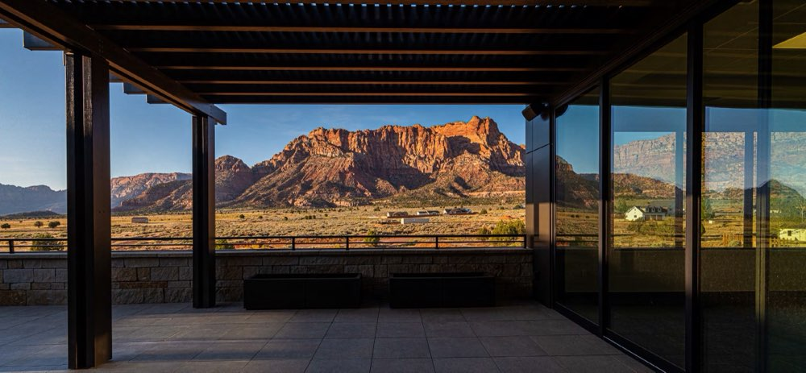
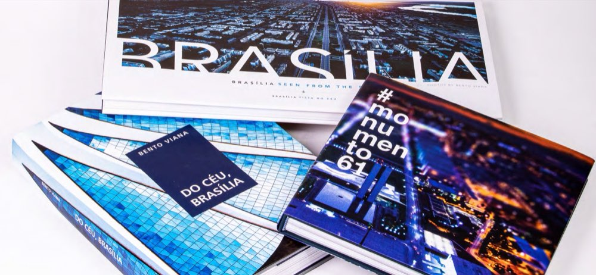

Architectural Photography — Salt Lake City
From Brasília to the American West
Before architecture became a subject, it was a presence.
In Brasília, it was impossible to ignore.
Concrete meeting sky.
Light tracing form.
Space shaping experience.
Years later, the landscapes of the American West revealed a different rhythm.
Mountains.
Desert.
Distance.
A quieter dialogue between structure and horizon.
Today, my work exists between these worlds.
Between monument and landscape.
Between design and atmosphere.
Between what is built and what is felt.
Photography allows me to explore that space.
To reveal not only what was built, but what belongs.
Selected work
All work


Services
Services
- Exterior
- Interior
- Aerial
- Environmental context
- Design details
Curated image collections for marketing, publications, awards submissions, websites, and archives.
Services
Published work
Brasília, in print
- Brasília Seen From the Sky / Brasília Vista do Céu
- Do Céu, Brasília
- #monumento61